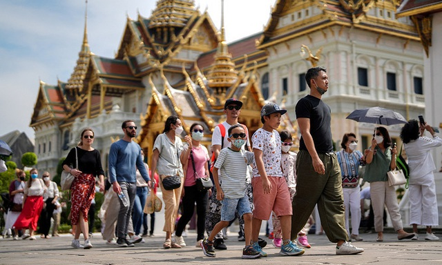

Thái Lan đơn giản hóa thủ tục cấp thị thực để kéo khách quốc tế
Thứ sáu, 11/8/2023, 16:07 (GMT+7)
Bằng cách giảm thời gian phê duyệt và rút gọn các giấy tờ cần thiết trong quá trình xin thị thực, Thái Lan đang tìm cách thu hút thêm khách du lịch nước ngoài. Phó phát ngôn viên chính phủ Ratchada Thanadirek cho biết, Bộ Ngoại giao Thái Lan đã hợp lý hóa đơn xin thị thực du lịch, giảm số lượng tài liệu hỗ trợ và thời gian xử lý từ 14 ngày xuống còn 7 ngày làm việc, theo Tân Hoa Xã.
Hiếm có khu phố cổ nào ở Đông Nam Á sánh được với phố cổ Hội An. Là một trong các điểm đến thu hút nhiều khách du lịch nhất của Việt Nam, nhưng không thể phủ nhận phố cổ được UNESCO bảo vệ có những khoảng lặng rất ăn ảnh, đặc biệt vào mỗi buổi tối, khi ánh sáng mặt trời nhường chỗ cho ánh sáng đầy màu sắc của hàng ngàn chiếc đèn lồng giấy. Chúng được treo trên những biệt thự, cửa hiệu và đền, chùa của khu phố, một số có tuổi đời lên đến 400 năm. Nổi bật có chùa Cầu được xây vào thế kỷ 16, chùa Pháp Bảo đa sắc màu và nhà di sản Tấn Ký. Những chiếc đèn lồng mang tính biểu tượng của Hội An là món quà lưu niệm tuyệt vời. Du khách có thể mua chúng tại chợ đêm hoặc tự thiết kế một chiếc trong các buổi hướng dẫn làm đồ thủ công mỹ nghệ…
Giới thiệu
Tell Ur Mom II - Winno ft. Heily「Cukak Remix」/ Audio Lyrics Video
Follow Me

Liên hệ
Điện thoại: 0987654321
Email: web1013@dinhnt.com